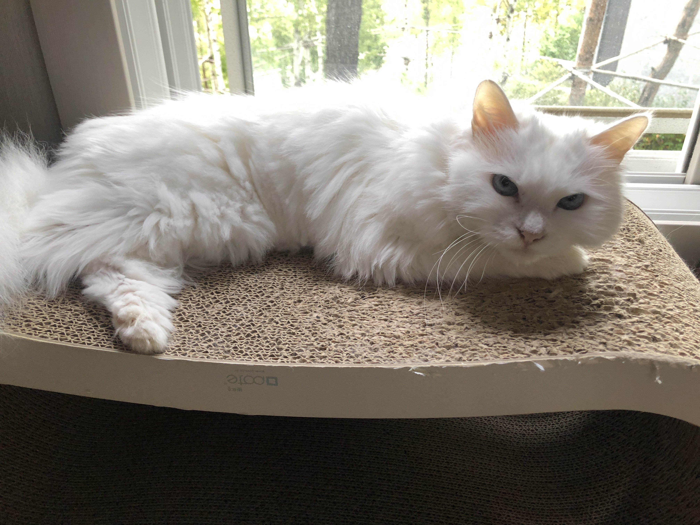

간략한 자기소개
이름: 최원혁
생년월일: 2001.07.23
국적: 한국
살았던 도시: 중국 수저우 시, 부산 동래구, 대구 칠곡
최원혁의 고향은 대구이며, 어릴때는 부산에서 살았다.
이후 중국으로 유학을 떠났다가 한국으로 돌아왔다.
좋아하는 동물: 고양이
고양이 사진

졸업한 초등학교: 무석 중국학교 (현재 폐교상태)
졸업한 중학교: SSIS 국제학교
졸업한 고등학교: SSIS 국제학교
현 소속: 연세대학교 글로벌인재학부
최원혁이 현재 수강하고 있는 과목
- 웹프로그래밍
- 데이터분석개론
- 데이터베이스개론
- 기독교와 세계문화
- 응용자료구조
계: 15.5학점 이다
- 연세대학교의 이념은
- '진리가 너희를 자유롭게 하리라' 이다.
인트로덕션 페이지 바로가기
살았던 도시 바로가기
시간표 바로가기